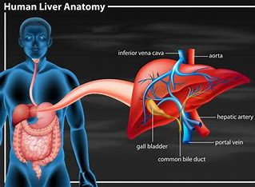
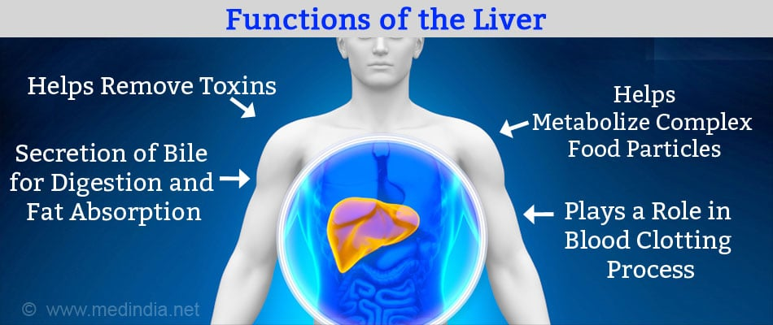
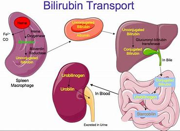
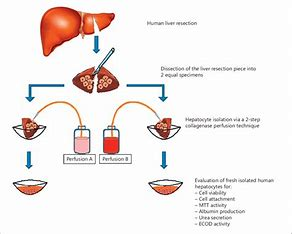
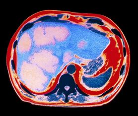

Liver
The liver is located in the upper right portion of the abdomen. It is the largest gland in the human body that performs several important functions. It is the only organ that has the ability to regenerate efficiently.
Liver Anatomy
Structure of Liver

The liver is a triangular, bilobed structure consisting of a larger right lobe and a smaller left lobe. The falciform ligament separates the two lobes.
A layer of fibrous tissue called Glisson’s capsule covers the liver. This capsule is covered by the peritoneum. This protects the liver from physical damage.
It has two main sources of blood:
Hepatic Portal Vein carries nutrient-rich blood from the digestive system.
Hepatic Artery carries oxygenated blood from the heart.
Functions of Liver

The important functions of the liver are mentioned below:
Production of Bile
Bile, which helps in the digestion and absorption of fats, vitamins and cholesterol is produced in the liver.
Absorption of Bilirubin

Bilirubin is formed by the breakdown of haemoglobin. The iron released is stored in the liver to make next-generation blood cells.
Supporting Blood Clots
> Bile is responsible for the absorption of vitamin K. If bile is not produced, clotting factors will not be produced.
Metabolization of Fats
Bile helps in the breakdown and digestion of fats.
Carbohydrate Metabolization
The carbohydrates stored in the liver as glycogen are broken down into glucose and released into the blood to maintain glucose levels.
Storage of Vitamins and Minerals
Vitamins A, D, E, K, and B12 are stored in the liver. It also stores iron in the form of ferritin to form new red blood cells.
Metabolization of Proteins
Bile helps in the digestion of proteins.
Filtering Blood
The compounds such as hormones, alcohol, etc are filtered by the liver from the blood.

Immunological Function
The liver contains Kuffer cells involved in immune activity. These destroy any disease-causing agents.
Albumin Production
Albumin transports fatty acids and steroids to maintain correct pressure and prevent leakage of blood vessels.
Angiotensinogen Synthesis
This hormone is responsible for the narrowing of blood vessels which results in an increase in blood pressure.
Regeneration of Liver
The liver has the ability to regrow in all vertebrates. The functions of the liver are not lost during the growth process. In humans, regeneration takes 8-15 days.
In mice, the same process takes around 5-7 days.
Liver Diseases
Fascioliasis
This is caused by a parasite “liver fluke”. The parasite can lie dormant in the liver for months or even years.
Cirrhosis
This can be caused due to alcohol consumption, toxins and hepatitis. Here, the scar cells replace liver cells in a process known as fibrosis. The functionality of liver cells is destroyed, which might lead to liver failure.
Hepatitis
It is the inflammation of the liver caused by viruses such as hepatitis A, B and C. In most cases, it leads to liver failure.
Alcoholic Liver Disease
Uncontrolled alcohol consumption leads to liver damage. It is the most common cause of cirrhosis.
Fatty Liver Disease
This is the result of alcohol abuse or obesity. In this disease, the vacuoles of fat buildup in the liver cells.
Liver Cancer

Alcohol and hepatitis are the major cause of liver cancer. Hepatocellular carcinoma and cholangiocarcinoma are the two types of liver cancer.
for more information on liver, its anatomy, functions and liver diseases, keep visiting BYJU’S website or download BYJU’S app for further reference.